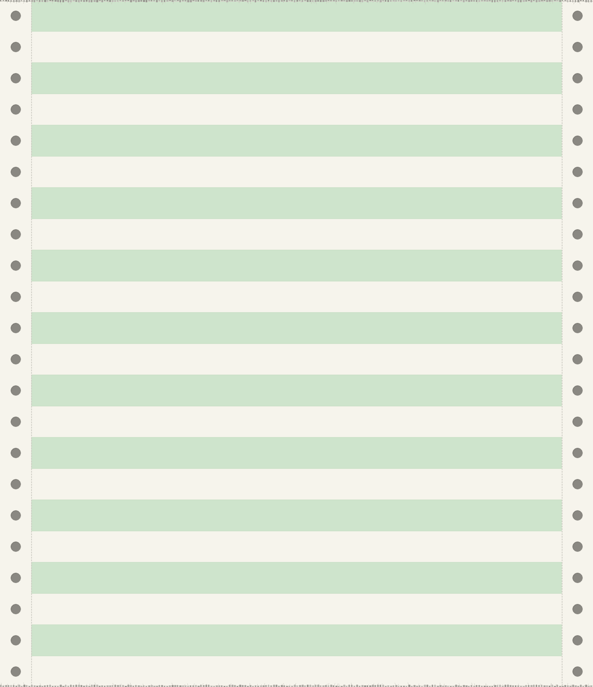
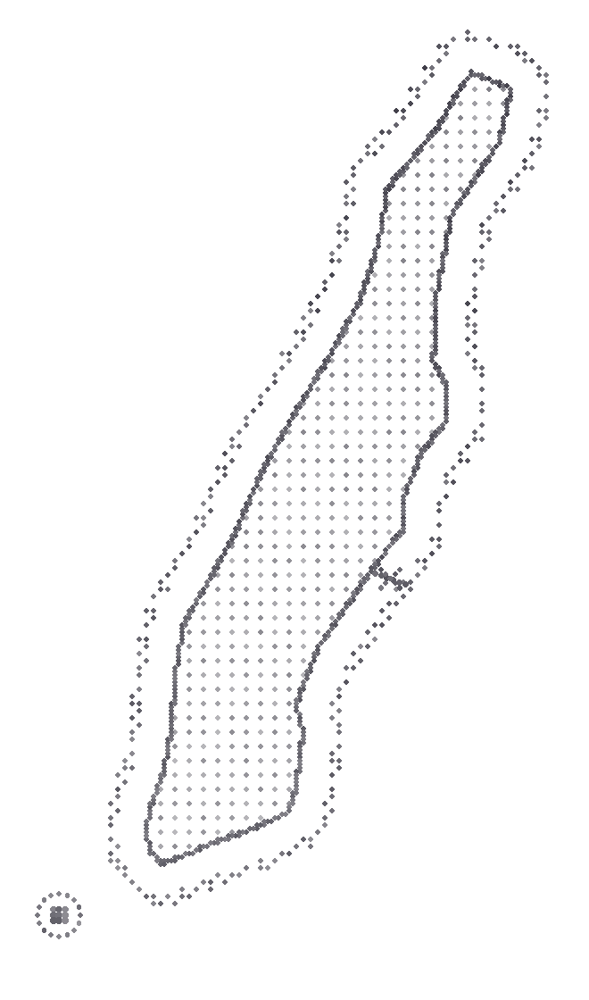
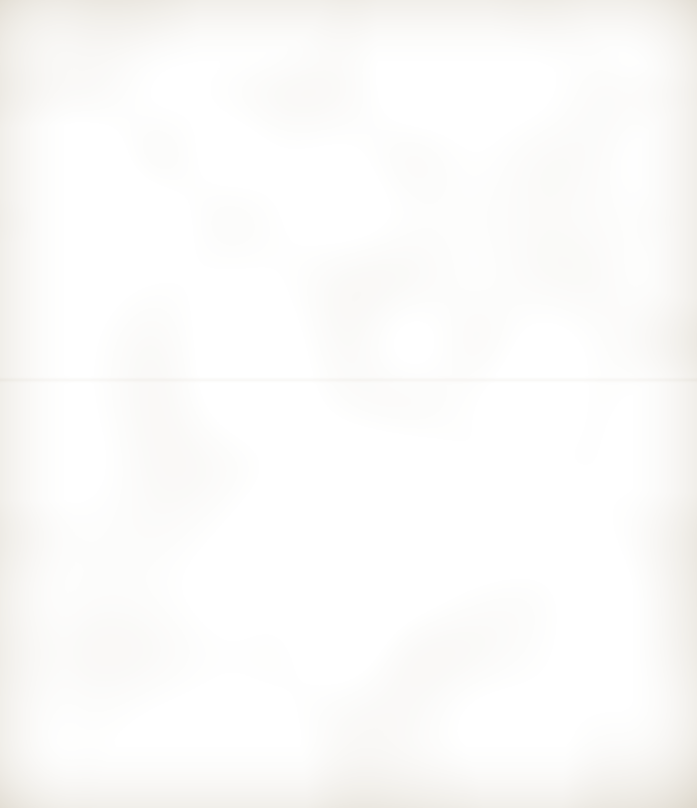

<div style="position: relative; width: 912px; height: 1056px; overflow: hidden; background: #f6f4ec; color: #24222e">. 69TH ST BRIDGE MINED. &lt;-- SECURITY CONTROL. TRANSFERS DUE, PROCESSING DECK.   PLISSKEN, S.    EX LT, SPECIAL FORCES    FEDERAL RESERVE DEPOSITORY.   SENTENCE: LIFE, MANHATTAN.   ONCE IN, NOBODY COMES OUT.. PERIMETER: ALL BRIDGES AND WATERWAYS MINED. REPORT ANY CRAFT AT ONCE.. GALLEY STOCK, END OF WATCH 2.   S-11  SARDINES, TINS ............ 48.   S-12  SALTINES, CASES ............ 6.   S-20  TOP ROUND, LB ............. 30.   S-31  CORN WHISKEY, QT ... 4 LOCKED. *** END OF RUN ***   LINES 0090   FORMS 0002" style="position: absolute; left: 0; top: 0; width: 912px; height: 1056px; display: block"><div style="position: absolute; left: 512px; top: 156px; "></div><div style="position: absolute; left: 470px; top: 768px; font-family: 'Reenie Beanie', 'Comic Sans MS', cursive; font-size: 36px; line-height: 30px; color: #22408f; transform: rotate(-3deg); white-space: nowrap">Heard he was dead?</div><div style="position: absolute; left: 566px; top: 864px; "></div></div>